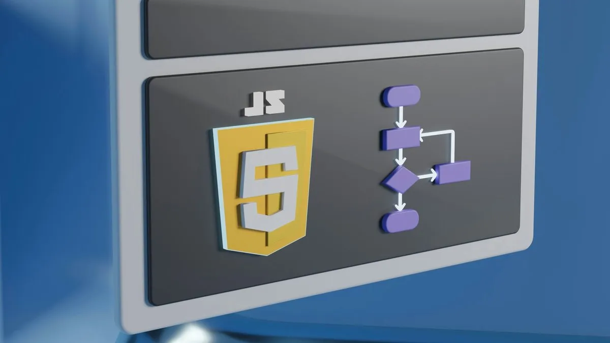

Vodič za učenje JavaScript programskog jezika
Šta je JavaScript
Kao što je pomenuto na glavnoj stranici ovoga sajta vodiča za učenje programiranja javascript je jedan od najpopularnijih programiskih jezika današnjice,verovatno je trenutno i najpopularniji a objasnicemo vam i zašto?
Dakle,javascript je najpopularniji programski jezik danas zato što sa njim danas bukvalno istom sintaksom možete pisati logiku koja se odvija u browseru(chrome,mozilla,opera itd) a takodje je možete pisati i na serverskoj strani putem Nodejs platforme.
Osnovna prednost javascript-a u odnosu na ostale programske jezike leži u tome što svi ljudi koji se bave web developmentom trebaju javascript a javascript zbog mogućnosti pisanja i na klijentskoj i na serverskoj strani ne treba nijedan drugi jezik.
Jačanjem brzina interneta rapidno pojavile su se i mogućnosti da se koriste razni framework-ci i biblioteke na klijentskoj(frontend strani) a pojavom NodeJS platforme 2009-te koju je kreirao Ryan Dahl možemo pisati i serversku logiku kompletno istom javascript sintaksom kao i na klijentu.
Do te čuvene 2009te godine javascript je bio običan skriptni jezik koji se odvijao samo u pretraživačima a sada je on bukvalno svukuda,naravno ovo ne znači da vi morate da ga koristite za serverske logike,stvar je izbora koji ćete programski jezik za server stranu(tzv backend) koristiti ali opet stoji činjenica da će vam javascript trebati za frontend(klijentsku stranu).
Zato bih početnicima koji ne poznaju nijedan serverski jezik toplo preporučio učenje javascripta jer će koristiti istu sintaksu sto je za početnike veliko olakšanje.
Gde i kako učiti JavaScript?
Danas se za učenje JavaScripta pored redovnih fakulteta kao što su ETF u Beogradu i FTN u Novom Sadu koji su vrhunski fakulteti iz IT oblasti ljudima nude gomile nekih kurseva tipa "naučite javascript za 1-3 meseca"
Bežite od takve vrste kurseva glavom bez obzira jer ćete samo uludu protraćiti vaš novac i vreme na nežšto što je blago rečeno prevara.
Ako pak ne možete priuštiti neki od gore navedena dva fakulteta postoje na web-u izvori koji vam omogućuju da totalno besplatno naučite javascript.
Pošto je javaskript mnogo kompleksniji i obimniji od ranije navedenih HTML5 i CSS3 svakako vam treba neko ko će vam biti putokaz u galaksiji zvanoj javacript.
Na youtube-u imate plajlistu za učenje javascripta za početnike na našem jeziku gde je javascript obradjen u 90-tak video-a i sveje besprekorno slozeno hronološki po brojevima lekcija(npr Lekcija1,Lekcija 2 itd)
Playlistu možete pronaći na Besplatno učenje JavaScripta i ona sadrži 90 video-a od toga "šta je javascript?" pa na dalje od tipova podataka u javascriptu i svega ostalog.
A u tom ostalom su objašnjeni svi tipovi podataka,objekti,nizovi,stringovi,integeri i bukvalno sve što se javascripta tiče od osnovnih bazičnih stvari pa sve do OOP(objektno orijentisanog programiranja) sa objašnjenim nasledjivanjem(prototipsko) i na kraju klasama pošto OOP u javascriptu nesto drugačije funkcioniše nego u drugim programskim jezicima.
Pošto je u programiranju najbolji način učenja tzv "learning by doing" ili na našem jeziku učenje kroz rad u tim video-ima imate pravljenje proste video igrice da bi ste na delu videli kako i šta sve javascript može.
Reference za učenje javascripta
Pored odlično predjenih osnova javascripta u tim video-ima imate u pojedinim videoima i ostavljene reference za druge besplatne a kvalitetne izvore za učenje javascripta.
Takodje kako budete jačali vaše znanje tehničkog engleskog jezika moći ćete da uspesno koristite i shvatate online dokumentaciju javascripta na MDN MDN javascript kao i na W3School javascript dokumentaciji.
Svakako jedna od najboljih referenci za učenje javascripta pored ove youtube playliste je set knjiga "You dont know JS" od autora Kyle Simpson-a.
To je set od 6 pdf knjiga a u video-u u opisu vam je link reference za te knjige a što je isto jako važno i redosled kojim trebate ići od tih 6 knjiga(redosled čitanja).
Zašto je važno da čitate pdf knjige kao početnik iako su na engleskom jeziku,pa tako ćete jačati vaš tehnički engleski jezik koji će vam u IT karijeri biti neophodan jer ćete ulaziti u mnogo dokumentacija zbog vaših potreba u datom trenutku da nešto rešite.
Moj predlog vam je da kao početnik u jednom tabu otvorite knjigu a u drugom gugl prevodioca i tako ćete ono šta ne znate od reči saznavati a zatim ćete neke rečenice povezivati samom logikom jer nešto engleskog jezika sigurno već znate.
Dakle ekstremno je bitno jačati tehnički engleski jezik,i zapamtite nešto jako važno kada uhvatite sebe da brzate i srljate u napred bez razumevanja prethodno prošlog,programiranje nije sprint na 100 metara,programiranje je maraton.
Hvala na poseti i želim vam srećno učenje.